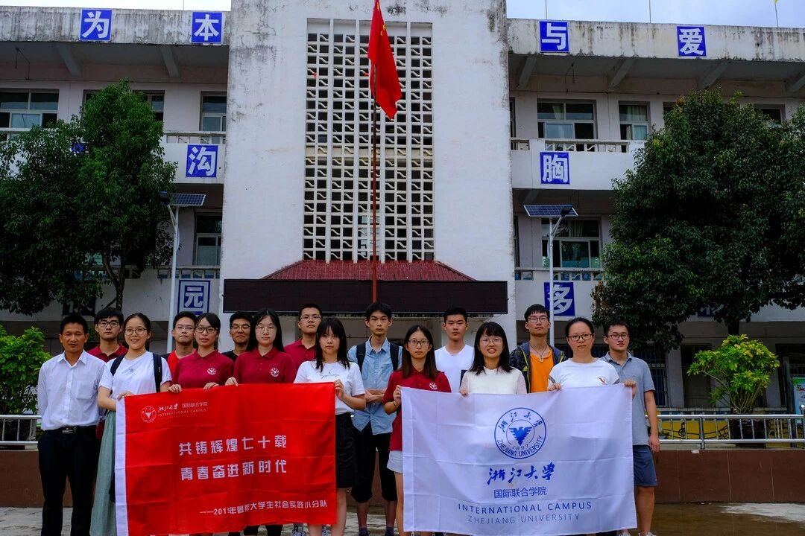
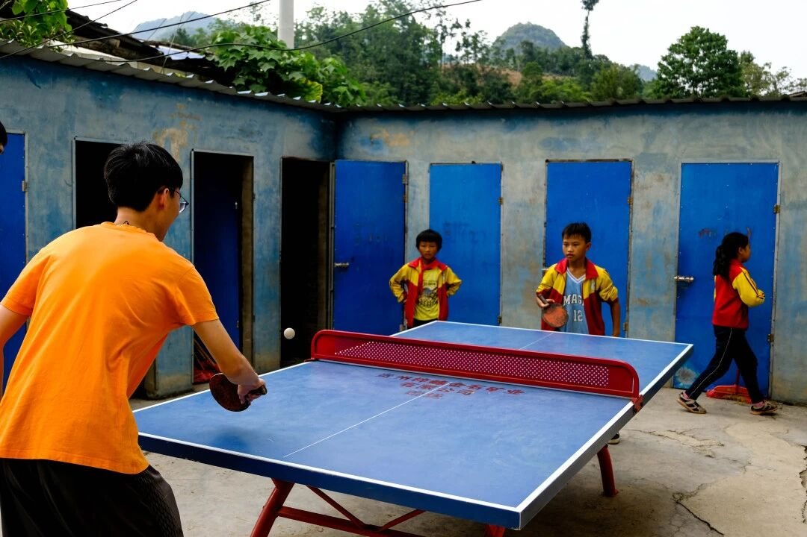
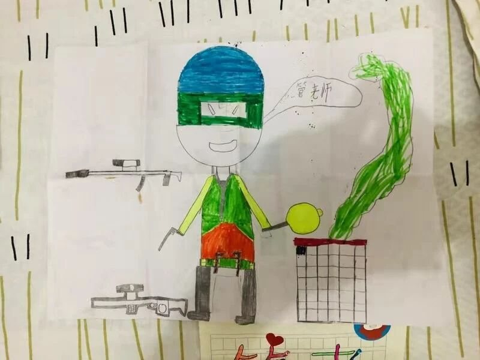
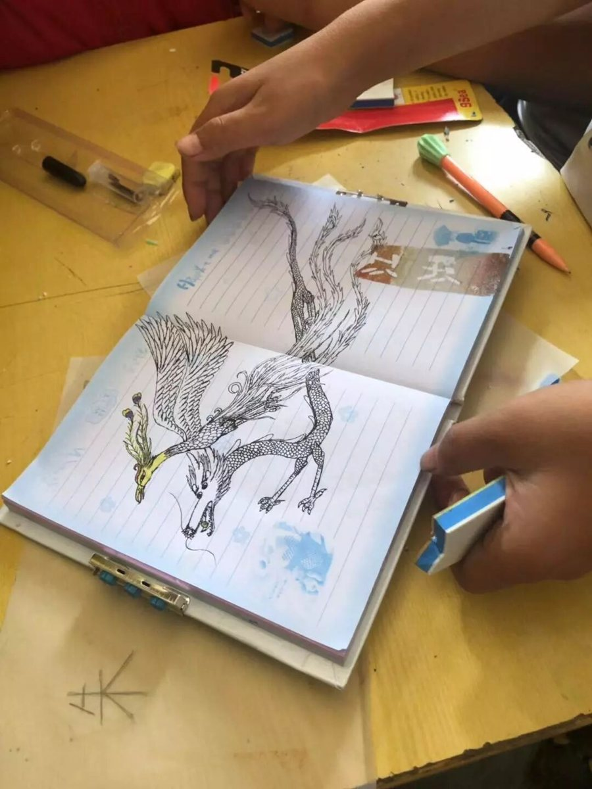
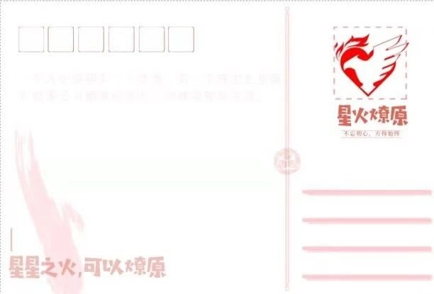

Volunteer Teaching in Rural Guizhou, 2019: Looking Back 2019 贵州支教 | 回首展望

In August 2019, I joined the Zhejiang University "Liaoyuan" (Prairie Fire) Volunteer Teaching Team and spent more than a week teaching children at a school in Jiaoma, Changshun County, in the mountains of Guizhou Province. This is our team's reflection, written at the end of the trip.
Our short but unforgettable days of volunteer teaching ended with the August sunshine.
We want to say:
your smiles are the most beautiful scenery we have ever seen.
May you walk out of the mountains, and may your future be bright!
— All members of the ZJU Guizhou Liaoyuan Volunteer Teaching Team
1 · We say goodbye so that we can meet again, better
Click, click went the shutter, photo after photo: in the classroom, on the stairs, on the playground, in the shade of the trees. They captured our smiles, and the memories of these days. On the playground, in PE class, in the classroom, in origami class.

If every period of memory has a flavor, then this one tastes like a matcha candy.
At first it is a little bitter. Not the bitterness of water and power cuts, but our sadness at how hard life is for these students, and our frustration at how unfair life can be. Then comes the sweetness: the sweetness of clicking with the students right away, of voices reading aloud together in Chinese class, of minds turning together in math class, of paper folding in step in art class, and of sweat shared in PE class. The students thanked us. They said we had taught them a lot and that they would always welcome us back. But we want to say that we are just as grateful to them. May every one of you aim high, and may your future be bright!


2 · We look back so that we can move forward
Many people asked us, "Was this trip organized by your university?" Each time, I answered with a bit of pride: "No, we students organized it ourselves." We had enough time to prepare, but we were new to almost everything, from planning the course schedule to finding a place to stay. We did not even secure our local accommodation until the day before we left. Most of our preparation went into safety, from mosquitoes where we would stay to transportation and personal safety.
We also wrote postcards for the children.

One week is not long, but it is not short either. The problems along the way were troublesome, but we overcame every one of them. On this trip, we experienced life in Guiyang, learned how hard it is to be a teacher, saw how much the children in the countryside struggle in their lives and studies, and came to understand how important poverty alleviation is, especially helping people change how they see their own possibilities. If there is one regret, it is that the time was too short. When we said goodbye, the children could hardly believe it; after a little more than a week together, we had only just become close. The trip was brief but deeply meaningful. We believe that one day we will return to that land and see an even better future there.
Originally published in Chinese on WeChat by the ZJU Guizhou Liaoyuan Volunteer Teaching Team (Sept. 17, 2019). Text: Guizhou Liaoyuan Volunteer Teaching Team · Photos: Zhikai Xu · Editor: Qile Guo. English translation by Anqi Tan. Read the original article →
2019 年 8 月，我参加了浙江大学赴贵州贵阳长顺“燎原”支教暑期社会实践团，在贵州长顺县交麻的大山里，和孩子们度过了一个多星期的支教时光。下面是我们支教团在活动结束时写下的回顾。
同八月的阳光一起结束的
是我们短暂却又难舍的支教时光
我们想说
你们的笑容是我们见过最美的风景
愿你们走出大山，前程似锦！
—— 浙大贵州燎原支教团所有成员致上
1 · 告别是为了更好的遇见
咔嚓咔嚓的快门，一张又一张，在班里，在楼梯，在操场，在树荫下，留下了我们的笑脸，也留下了这段时间的回忆。操场上、体育课、教室里、折纸课。
如果说每段时间的记忆都是有味道的，那我们觉得这一段的记忆就像是一颗抹茶糖。
微尝，略带苦涩，但那不是停水停电的苦，而是对同学生活不易的感慨，是对生活不公的愤懑。而之后，就尝到了甜味，那是和同学们一拍即合的甜味，那是语文课时一齐洋溢的朗诵声，是数学课上同时转动的思维，是美术课里跟随着翻转的纸张，是体育课中共同挥洒的汗水。同学们谢谢我们，说我们教了他们很多，说这里一直欢迎我们，但我们想说，我们也很谢谢他们。愿每一个同学都志存高远，前程似锦！
2 · 回首是为了更好的将来
有很多人都问我们，这次的活动是你们学校组织的嘛？这时候我总会带一点小自豪地说，这是我们同学自己组织的。虽然前期准备的时间上还算充分，但各项事务上的不熟悉还是让我们遇到了不少困难，如课程安排等，甚至于我们到了出发前一天才搞定在当地的住宿问题。而在前期准备工作中，投入最多的便是对安全问题的准备，小到住宿会遇到的蚊虫问题，大到交通人身安全。
我们还给孩子们写了明信片。
一个礼拜说长不长，说短也不短，一路上的那些问题虽麻烦，也都被我们一一克服过来。在这次活动里，我们体验了贵阳的生活，感受了做老师的不易，了解到了乡下孩子们生活与学习上的辛苦，更意识到了扶贫工作以及意识扶贫在其中的重要性。如果说这次活动有遗憾的话，那唯一的遗憾就是时间太短了，以至于和孩子们道别的时候，他们还有些不敢相信，毕竟相处了一周多，大家刚变得熟悉起来。活动虽短暂却意义非凡，相信有一天我们会再来到那片土地，见到更好的光景。
原文发表于微信公众号“浙大交麻燎原记”（2019 年 9 月 17 日）。文｜贵州燎原支教团 · 图｜许志凯 · 图文编辑｜郭淇乐。查看原文 →